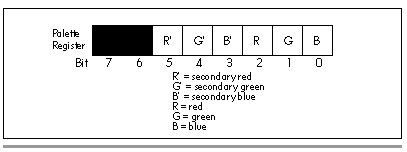

| Previous | Table of Contents | Next |
How does one go about setting the palette registers? Well, it’s certainly possible to set the palette registers directly by addressing them at registers 0 through 0FH of the Attribute Controller. However, setting the palette registers is a bit tricky—bit 5 of the Attribute Controller Index register must be 0 while the palette registers are written to, and glitches can occur if the updating doesn’t take place during the blanking interval—and besides, it turns out that there’s no need at all to go straight to the hardware on this one. Conveniently, the EGA BIOS provides us with video function 10H, which supports setting either any one palette register or all 16 palette registers (and the overscan register as well) with a single video interrupt.
Video function 10H is invoked by performing an INT 10H with AH set to 10H. If AL is 0 (subfunction 0), then BL contains the number of the palette register to set, and BH contains the value to set that register to. If AL is 1 (subfunction 1), then BH contains the value to set the overscan (border) color to. Finally, if AL is 2 (subfunction 2), then ES:DX points to a 17-byte array containing the values to set palette registers 0-15 and the overscan register to. (For completeness, although it’s unrelated to the palette registers, there is one more subfunction of video function 10H. If AL = 3 (subfunction 3), bit 0 of BL is set to 1 to cause bit 7 of text attributes to select blinking, or set to 0 to cause bit 7 of text attributes to select highreverse video.)

Figure 29.3 Bit organization within a palette register.
Listing 29.3 uses video function 10H, subfunction 2 to step through all 64 possible colors. This is accomplished by putting up 16 color bars, one for each of the 16 possible 4-bit pixel values, then changing the mapping provided by the palette registers to select a different group of 16 colors from the set of 64 each time a key is pressed. Initially, colors 0-15 are displayed, then 1-16, then 2-17, and so on up to color 3FH wrapping around to colors 0-14, and finally back to colors 0-15. (By the way, at mode set time the 16 palette registers are not set to colors 0-15, but rather to 0H, 1H, 2H, H, 4H, 5H, 14H, 7H, 38H, 39H, 3AH, 3BH, 3CH, 3DH, 3EH, and 3FH, respectively. Bits 6, 5, and 4—secondary red, green, and blue—are all set to 1 in palette registers 8-15 in order to produce high-intensity colors. Palette register 6 is set to 14H to produce brown, rather than the yellow that the expected value of 6H would produce.)
When you run Listing 29.3, you’ll see that the whole screen changes color as each new color set is selected. This occurs because most of the pixels on the screen have a value of 0, selecting the background color stored in palette register 0, and we’re reprogramming palette register 0 right along with the other 15 palette registers.
It’s important to understand that in Listing 29.3 the contents of display memory are never changed after initialization. The only change is the mapping from the 4-bit pixel data coming out of display memory to the 6-bit data going to the monitor. For this reason, it’s technically inaccurate to speak of bits in display memory as representing colors; more accurately, they represent attributes in the range 0-15, which are mapped to colors 0-3FH by the palette registers.
LISTING 29.3 L29-3.ASM
; Program to illustrate the color mapping capabilities of the
; EGA’s palette registers.
;
VGA_SEGMENT equ 0a000h
SC_INDEX equ 3c4h ;Sequence Controller Index register
MAP_MASK equ 2 ;Map Mask register index in SC
BAR_HEIGHT equ 14 ;height of each bar
TOP_BAR equ BAR_HEIGHT*6 ;start the bars down a bit to
; leave room for text
;
stack segment para stack ‘STACK’
db 512 dup (?)
stack ends
;
Data segment word ‘DATA’
KeyMsg db ‘Press any key to see the next color set. ’
db ‘There are 64 color sets in all.’
db 0dh, 0ah, 0ah, 0ah, 0ah
db 13 dup (‘ ’), ‘Attribute’
db 38 dup (‘ ’), ‘Color$’
;
; Used to label the attributes of the color bars.
;
AttributeNumbers label byte
x= 0
rept 16
if x lt 10
db ‘0’, x+‘0’, ‘h’, 0ah, 8, 8, 8
else
db ‘0’, x+‘A’-10, ‘h’, 0ah, 8, 8, 8
endif
x= x+1
endm
db ‘$’
;
; Used to label the colors of the color bars. (Color values are
; filled in on the fly.)
;
ColorNumberslabelbyte
rept 16
db ‘000h’, 0ah, 8, 8, 8, 8
endm
COLOR_ENTRY_LENGTHequ($-ColorNumbers)/16
db ‘$’
;
CurrentColordb?
;
; Space for the array of 16 colors we’ll pass to the BIOS, plus
; an overscan setting of black.
;
ColorTable db 16 dup (?), 0
Data ends
;
Code segment
assume cs:Code, ds:Data
Start procnear
cld
mov ax,Data
mov ds,ax
;
; Go to hi-res graphics mode.
;
mov ax,10h ;AH = 0 means mode set, AL = 10h selects
; hi-res graphics mode
int 10h ;BIOS video interrupt
;
; Put up relevant text.
;
mov ah,9 ;DOS print string function
mov dx,offset KeyMsg
int 21h
;
; Put up the color bars, one in each of the 16 possible pixel values
; (which we’ll call attributes).
;
mov cx,16 ;we’ll put up 16 color bars
sub al,al ;start with attribute 0
BarLoop:
push ax
push cx
call BarUp
pop cx
pop ax
inc ax ;select the next attribute
loop BarLoop
;
; Put up the attribute labels.
;
mov ah,2 ;video interrupt set cursor position function
sub bh,bh ;page 0
mov dh,TOP_BAR/14 ;counting in character rows, match to
; top of first bar, counting in
; scan lines
mov dl,16 ;just to left of bars
int 10h
mov ah,9 ;DOS print string function
mov dx,offset AttributeNumbers
int 21h
;
; Loop through the color set, one new setting per keypress.
;
mov [CurrentColor],0 ;start with color zero
ColorLoop:
;
; Set the palette registers to the current color set, consisting
; of the current color mapped to attribute 0, current color + 1
; mapped to attribute 1, and so on.
;
mov al,[CurrentColor]
mov bx,offset ColorTable
mov cx,16 ;we have 16 colors to set
PaletteSetLoop:
and al,3fh ;limit to 6-bit color values
mov [bx],al ;build the 16-color table used for setting
inc bx ; the palette registers
inc ax
loop PaletteSetLoop
mov ah,10h ;video interrupt palette function
mov al,2 ;subfunction to set all 16 palette registers
; and overscan at once
mov dx,offset ColorTable
push ds
pop es ;ES:DX points to the color table
int 10h ;invoke the video interrupt to set the palette
;
; Put up the color numbers, so we can see how attributes map
; to color values, and so we can see how each color # looks
; (at least on this particular screen).
;
call ColorNumbersUp
;
; Wait for a keypress, so they can see this color set.
;
WaitKey:
mov ah,8 ;DOS input without echo function
int 21h
;
; Advance to the next color set.
;
mov al,[CurrentColor]
inc ax
mov [CurrentColor],al
cmp al,64
jbe ColorLoop
;
; Restore text mode.
;
mov ax,3
int 10h
;
; Done.
;
Done:
mov ah,4ch ;DOS terminate function
int 21h
;
; Puts up a bar consisting of the specified attribute (pixel value),
; at a vertical position corresponding to the attribute.
;
; Input: AL = attribute
;
BarUp proc near
mov dx,SC_INDEX
mov ah,al
mov al,MAP_MASK
out dx,al
inc dx
mov al,ah
out dx,al ;set the Map Mask register to produce
; the desired color
mov ah,BAR_HEIGHT
mul ah ;row of top of bar
add ax,TOP_BAR ;start a few lines down to leave room for
; text
mov dx,80 ;rows are 80 bytes long
mul dx ;offset in bytes of start of scan line bar
; starts on
add ax,20 ;offset in bytes of upper left corner of bar
mov di,ax
mov ax,VGA_SEGMENT
mov es,ax ;ES:DI points to offset of upper left
; corner of bar
mov dx,BAR_HEIGHT
mov al,0ffh
BarLineLoop:
mov cx,40 ;make the bars 40 wide
rep stosb ;do one scan line of the bar
add di,40 ;point to the start of the next scan line
; of the bar
dec dx
jnz BarLineLoop
ret
BarUp endp
;
; Converts AL to a hex digit in the range 0-F.
;
BinToHexDigit proc near
cmp al,9
ja IsHex
add al,‘0’
ret
IsHex:
add al,‘A’-10
ret
BinToHexDigit endp
;
; Displays the color values generated by the color bars given the
; current palette register settings off to the right of the color
; bars.
;
ColorNumbersUp proc near
mov ah,2 ;video interrupt set cursor position function
sub bh,bh ;page 0
mov dh,TOP_BAR/14 ;counting in character rows, match to
; top of first bar, counting in
; scan lines
mov dl,20+40+1 ;just to right of bars
int 10h
mov al,[CurrentColor] ;start with the current color
mov bx,offset ColorNumbers+1
;build color number text string on the fly
mov cx,16 ;we’ve got 16 colors to do
ColorNumberLoop:
pus hax;save the color #
and al,3fh;limit to 6-bit color values
shr al,1
shr al,1
shr al,1
shr al,1 ;isolate the high nibble of the color #
call BinToHexDigit ;convert the high color # nibble
mov [bx],al ; and put it into the text
pop ax ;get back the color #
push ax ;save the color #
and al,0fh ;isolate the low color # nibble
call BinToHexDigit ;convert the low nibble of the
; color # to ASCII
mov [bx+1],al ; and put it into the text
add bx,COLOR_ENTRY_LENGTH ;point to the next entry
pop ax ;get back the color #
inc ax ;next color #
loop ColorNumberLoop
mov ah,9 ;DOS print string function
mov dx,offset ColorNumbers
int 21h ;put up the attribute numbers
ret
ColorNumbersUpendp
;
Start endp
Code ends
end Start
| Previous | Table of Contents | Next |